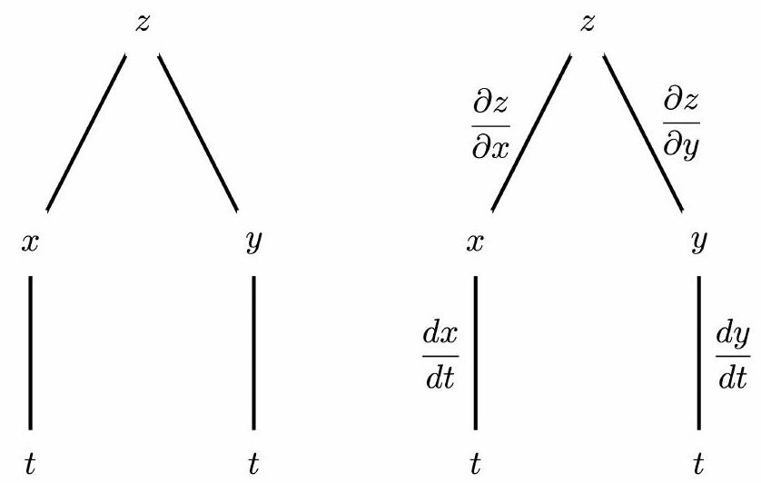
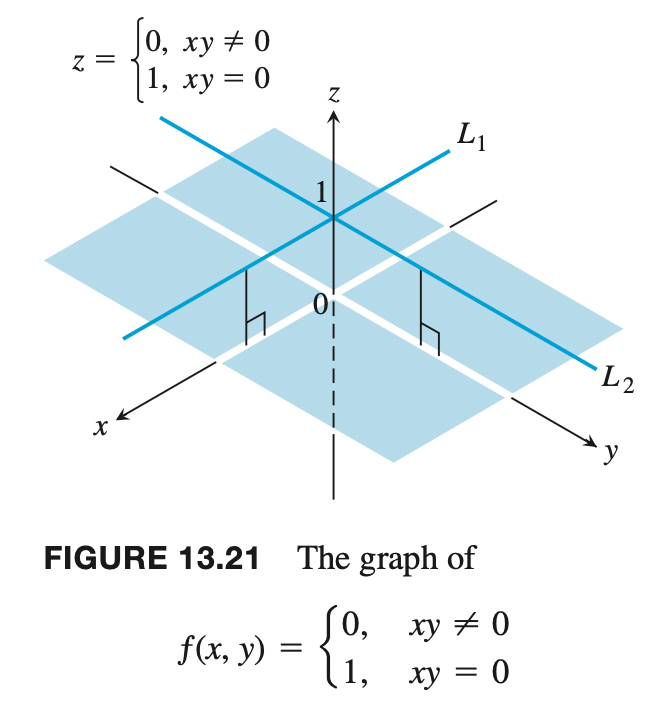

Partial Derivatives
Contents
Partial Derivatives¶
Definition¶
The partial derivatives of a function $f(x, y)$ are:
$$ f_{x}(x, y)=\lim {h \rightarrow 0} \frac{f(x+h, y)-f(x, y)}{h}, \quad f{y}(x, y)=\lim _{h \rightarrow 0} \frac{f(x, y+h)-f(x, y)}{h} $$
To find $f_{x}$ we differentiate $f(x, y)$ with respect to $x$, treating $y$ as a constant.
To find $f_{y}$ we differentiate $f(x, y)$ with respect to $y$, treating $x$ as a constant.
Alternative notations for the partial derivatives of $z=f(x, y)$ are
$$ \begin{aligned} &f_{x}(x, y)=f_{x}=\frac{\partial f}{\partial x}=\frac{\partial}{\partial x} f(x, y)=z_{x}=\frac{\partial z}{\partial x} \ &f_{y}(x, y)=f_{y}=\frac{\partial f}{\partial y}=\frac{\partial}{\partial y} f(x, y)=z_{y}=\frac{\partial z}{\partial y} \end{aligned} $$
Partial Derivatives and Continuity¶
A function $f(x, y)$ can have partial derivatives with respect to both $x$ and $y$ at a point without the function being continuous there. This is different from functions of a single variable, where the existence of a derivative implies continuity.
$f(x,y)$ consists of the lines $L1$ and $L2$ (lying 1 unit above the $xy$-plane) and the four open quadrants of the $xy$-plane. The function has partial derivatives at the origin but is not continuous there.
Partial derivatives of more variables¶
Partial derivatives of functions of three or more variables are defined in a similar way. For example, for $f(x, y, z)$ we have
$$ f_{x}(x, y, z)=\lim _{h \rightarrow 0} \frac{f(x+h, y, z)-f(x, y, z)}{h} $$
To find $f_{x}(x, y, z)$ we differentiate $f(x, y, z)$ with respect to $x$, treating $y$ and $z$ as constants.
Tangent plane to the surface $z=f(x, y)$ at the point $(a, b)$¶
If $f$ is continuous and differentiable in an open disk containing the point $(a, b)$, the equation of the tangent plane is
$$ z=f(a, b)+f_{x}(a, b)(x-a)+f_{y}(a, b)(x-b) . $$
Linearization of $f(x, y)$ at $(a, b)$¶
$$ L(x, y)=f(a, b)+f_{x}(a, b)(x-a)+f_{y}(a, b)(y-b) . $$
Near $(a, b)$ we may use the linear approximation $f(x, y) \approx L(x, y)$.
Differentials and Small Changes¶
Recall that in single variable calculus, if we have a differentiable function $y=f(x)$ and $x$ changes by $d x=\Delta x$ then
the differential $d y$ is defined by $d y=f^{\prime}(x) d x$ and is the change in the tangent line.
the corresponding small change in the function is $\Delta y \approx d y$.
Hence $\Delta y \approx f^{\prime}(x) \Delta x$ and $f(x+\Delta x) \approx f(x)+f^{\prime}(x) d x$.
Similarly, suppose we have a differentiable function $z=f(x, y)$ and that $x$ and $y$ change by amounts $d x=\Delta x$ and $d y=\Delta y .$
The total differential $d z$ is defined by $d z=f_{x}(x, y) d x+f_{y}(x, y) d y=\frac{\partial f}{\partial x} d x+\frac{\partial f}{\partial y} d y$ and is the change in the tangent plane.
The change in the function is $\Delta z$. For small changes, $\Delta z \approx d z=f_{x} \Delta x+f_{y} \Delta y$ and $f(x+d x, y+d y) \approx f(x, y)+d z=f(x, y)+f_{x}(x, y) d x+f_{y}(x, y) d y$.
Extensions to higher dimensions¶
Linearizations and differentials can be defined in a similar way for functions of more variables. For example, for $w=f(x, y, z)$
the linear approximation of $f$ at $(a, b, c)$ is $f(x, y, z) \approx L(x, y, z)=f(a, b, c)+f_{x}(a, b, c)(x-a)+f_{y}(a, b, c)(y-b)+f_{z}(a, b, c)(z-c) .$
the differential $d w$ is $d w=f_{x} d x+f_{y} d y+f_{z} d z$.
Note on Differentiability¶
Differentiability of functions of two or more variables is more complicated.
Informally it can be said that a function $f(x, y)$ is differentiable at a point $(a, b)$ if it is wellapproximated by a linear function near that point.
More formally, it can be proved that if the partial derivatives $f_{x}$ and $f_{y}$ exist and are continuous on a small disk centred at $(a, b)$ then $f$ is differentiable at $(a, b)$.